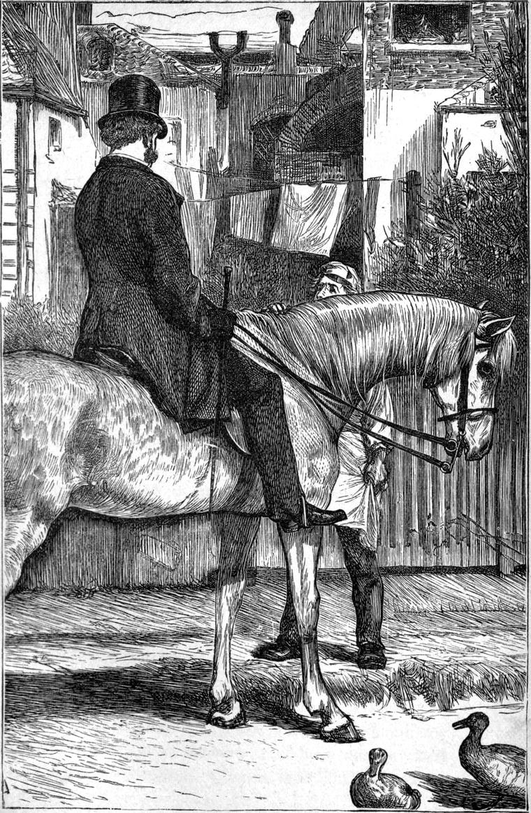

I was within a mile of the village, returning from my visit to the Misses Crowther, when my horse, which was walking slowly along the soft side of the road, lifted his head, and pricked up his ears at the sound, which he heard first, of approaching hoofs. The riders soon came in sight—Miss Oldcastle, Judy, and Captain Everard. Miss Oldcastle I had never seen on horseback before. Judy was on a little white pony she used to gallop about the fields near the Hall. The Captain was laughing and chatting gaily as they drew near, now to the one, now to the other. Being on my own side of the road I held straight on, not wishing to stop or to reveal the signs of a distress which had almost overwhelmed me. I felt as cold as death, or rather as if my whole being had been deprived of vitality by a sudden exhaustion around me of the ethereal element of life. I believe I did not alter my bearing, but remained with my head bent, for I had been thinking hard just before, till we were on the point of meeting, when I lifted my hat to Miss Oldcastle without drawing bridle, and went on. The Captain returned my salutation, and likewise rode on. I could just see, as they passed me, that Miss Oldcastle’s pale face was flushed even to scarlet, but she only bowed and kept alongside of her companion. I thought I had escaped conversation, and had gone about twenty yards farther, when I heard the clatter of Judy’s pony behind me, and up she came at full gallop.
“Why didn’t you stop to speak to us, Mr Walton?” she said. “I pulled up, but you never looked at me. We shall be cross all the rest of the day, because you cut us so. What have we done?”
“Nothing, Judy, that I know of,” I answered, trying to speak cheerfully. “But I do not know your companion, and I was not in the humour for an introduction.”
She looked hard at me with her keen gray eyes; and I felt as if the child was seeing through me.
“I don’t know what to make of it, Mr Walton. You’re very different somehow from what you used to be. There’s something wrong somewhere. But I suppose you would all tell me it’s none of my business. So I won’t ask questions. Only I wish I could do anything for you.”
I felt the child’s kindness, but could only say—
“Thank you, Judy. I am sure I should ask you if there were anything you could do for me. But you’ll be left behind.”
“No fear of that. My Dobbin can go much faster than their big horses. But I see you don’t want me, so good-bye.”
She turned her pony’s head as she spoke, jumped the ditch at the side of the road, and flew after them along the grass like a swallow. I likewise roused my horse and went off at a hard trot, with the vain impulse so to shake off the tormenting thoughts that crowded on me like gadflies. But this day was to be one of more trial still.
As I turned a corner, almost into the street of the village, Tom Weir was at my side. He had evidently been watching for me. His face was so pale, that I saw in a moment something had happened.

“What is the matter, Tom?” I asked, in some alarm.
He did not reply for a moment, but kept unconsciously stroking my horse’s neck, and staring at me “with wide blue eyes.”
“Come, Tom,” I repeated, “tell me what is the matter.”
I could see his bare throat knot and relax, like the motion of a serpent, before he could utter the words.
“Kate has killed her little boy, sir.”
He followed them with a stifled cry—almost a scream, and hid his face in his hands.
“God forbid!” I exclaimed, and struck my heels in my horse’s sides, nearly overturning poor Tom in my haste.
“She’s mad, sir; she’s mad,” he cried, as I rode off.
“Come after me,” I said, “and take the mare home. I shan’t be able to leave your sister.”
Had I had a share, by my harsh words, in driving the woman beyond the bounds of human reason and endurance? The thought was dreadful. But I must not let my mind rest on it now, lest I should be unfitted for what might have to be done. Before I reached the door, I saw a little crowd of the villagers, mostly women and children, gathered about it. I got off my horse, and gave him to a woman to hold till Tom should come up. With a little difficulty, I prevailed on the rest to go home at once, and not add to the confusions and terrors of the unhappy affair by the excitement of their presence. As soon as they had yielded to my arguments, I entered the shop, which to my annoyance I found full of the neighbours. These likewise I got rid of as soon as possible, and locking the door behind them, went up to the room above.
To my surprise, I found no one there. On the hearth and in the fender lay two little pools of blood. All in the house was utterly still. It was very dreadful. I went to the only other door. It was not bolted as I had expected to find it. I opened it, peeped in, and entered. On the bed lay the mother, white as death, but with her black eyes wide open, staring at the ceiling: and on her arm lay little Gerard, as white, except where the blood had flowed from the bandage that could not confine it, down his sweet deathlike face. His eyes were fast closed, and he had no sign of life about him. I shut the door behind me, and approached the bed. When Catherine caught sight of me, she showed no surprise or emotion of any kind. Her lips, with automaton-like movement, uttered the words—
“I have done it at last. I am ready. Take me away. I shall be hanged. I don’t care. I confess it. Only don’t let the people stare at me.”
Her lips went on moving, but I could hear no more till suddenly she broke out—
“Oh! my baby! my baby!” and gave a cry of such agony as I hope never to hear again while I live.
At this moment I heard a loud knocking at the shop-door, which was the only entrance to the house, and remembering that I had locked it, I went down to see who was there. I found Thomas Weir, the father, accompanied by Dr Duncan, whom, as it happened, he had had some difficulty in finding. Thomas had sped to his daughter the moment he heard the rumour of what had happened, and his fierceness in clearing the shop had at least prevented the neighbours, even in his absence, from intruding further.
We went up together to Catherine’s room. Thomas said nothing to me about what had happened, and I found it difficult even to conjecture from his countenance what thoughts were passing through his mind.
Catherine looked from one to another of us, as if she did not know the one from the other. She made no motion to rise from her bed, nor did she utter a word, although her lips would now and then move as if moulding a sentence. When Dr Duncan, after looking at the child, proceeded to take him from her, she gave him one imploring look, and yielded with a moan; then began to stare hopelessly at the ceiling again. The doctor carried the child into the next room, and the grandfather followed.
“You see what you have driven me to!” cried Catherine, the moment I was left alone with her. “I hope you are satisfied.”
The words went to my very soul. But when I looked at her, her eyes were wandering about over the ceiling, and I had and still have difficulty in believing that she spoke the words, and that they were not an illusion of my sense, occasioned by the commotion of my own feelings. I thought it better, however, to leave her, and join the others in the sitting-room. The first thing I saw there was Thomas on his knees, with a basin of water, washing away the blood of his grandson from his daughter’s floor. The very sight of the child had hitherto been nauseous to him, and his daughter had been beyond the reach of his forgiveness. Here was the end of it—the blood of the one shed by the hand of the other, and the father of both, who had disdained both, on his knees, wiping it up. Dr Duncan was giving the child brandy; for he had found that he had been sick, and that the loss of blood was the chief cause of his condition. The blood flowed from a wound on the head, extending backwards from the temple, which had evidently been occasioned by a fall upon the fender, where the blood lay both inside and out; and the doctor took the sickness as a sign that the brain had not been seriously injured by the blow. In a few minutes he said—
“I think he’ll come round.”
“Will it be safe to tell his mother so?” I asked.
“Yes: I think you may.”
I hastened to her room.
“Your little darling is not dead, Catherine. He is coming to.”
She THREW herself off the bed at my feet, caught them round with her arms, and cried—
“I will forgive him. I will do anything you like. I forgive George Everard. I will go and ask my father to forgive me.”
I lifted her in my arms—how light she was!—and laid her again on the bed, where she burst into tears, and lay sobbing and weeping. I went to the other room. Little Gerard opened his eyes and closed them again, as I entered. The doctor had laid him in his own crib. He said his pulse was improving. I beckoned to Thomas. He followed me.
“She wants to ask you to forgive her,” I said. “Do not, in God’s name, wait till she asks you, but go and tell her that you forgive her.”
“I dare not say I forgive her,” he answered. “I have more need to ask her to forgive me.”
I took him by the hand, and led him into her room. She feebly lifted her arms towards him. Not a word was said on either side. I left them in each other’s embrace. The hard rocks had been struck with the rod, and the waters of life had flowed forth from each, and had met between.
I have more than once known this in the course of my experience—the ice and snow of a long estrangement suddenly give way, and the boiling geyser-floods of old affection rush from the hot deeps of the heart. I think myself that the very lastingness and strength of animosity have their origin sometimes in the reality of affection: the love lasts all the while, freshly indignant at every new load heaped upon it; till, at last, a word, a look, a sorrow, a gladness, sets it free; and, forgetting all its claims, it rushes irresistibly towards its ends. Thus was it with Thomas and Catherine Weir.
When I rejoined Dr Duncan, I found little Gerard asleep, and breathing quietly.
“What do you know of this sad business, Mr Walton?” said the doctor.
“I should like to ask the same question of you,” I returned. “Young Tom told me that his sister had murdered the child. That is all I know.”
“His father told me the same; and that is all I know. Do you believe it?”
“At least we have no evidence about it. It is tolerably certain neither of those two could have been present. They must have received it by report. We must wait till she is able to explain the thing herself.”
“Meantime,” said Dr Duncan, “all I believe is, that she struck the child, and that he fell upon the fender.”
I may as well inform my reader that, as far as Catherine could give an account of the transaction, this conjecture was corroborated. But the smallest reminder of it evidently filled her with such a horror of self-loathing, that I took care to avoid the subject entirely, after the attempt at explanation which she made at my request. She could not remember with any clearness what had happened. All she remembered was that she had been more miserable than ever in her life before; that the child had come to her, as he seldom did, with some childish request or other; that she felt herself seized with intense hatred of him; and the next thing she knew was that his blood was running in a long red finger towards her. Then it seemed as if that blood had been drawn from her own over-charged heart and brain; she knew what she had done, though she did not know how she had done it; and the tide of her ebbed affection flowed like the returning waters of the Solway. But beyond her restored love, she remembered nothing more that happened till she lay weeping with the hope that the child would yet live. Probably more particulars returned afterwards, but I took care to ask no more questions. In the increase of illness that followed, I more than once saw her shudder while she slept, and thought she was dreaming what her waking memory had forgotten; and once she started awake, crying, “I have murdered him again.”
To return to that first evening:—When Thomas came from his daughter’s room, he looked like a man from whom the bitterness of evil had passed away. To human eyes, at least, it seemed as if self had been utterly slain in him. His face had that child-like expression in its paleness, and the tearfulness without tears haunting his eyes, which reminds one of the feeling of an evening in summer between which and the sultry day preceding it has fallen the gauzy veil of a cooling shower, with a rainbow in the east.
“She is asleep,” he said.
“How is it your daughter Mary is not here?” I asked.
“She was taken with a fit the moment she heard the bad news, sir. I left her with nobody but father. I think I must go and look after her now. It’s not the first she’s had neither, though I never told any one before. You won’t mention it, sir. It makes people look shy at you, you know, sir.”
“Indeed, I won’t mention it.—Then she mustn’t sit up, and two nurses will be wanted here. You and I must take it to-night, Thomas. You’ll attend to your daughter, if she wants anything, and I know this little darling won’t be frightened if he comes to himself, and sees me beside him.”
“God bless you, sir,” said Thomas, fervently.
And from that hour to this there has never been a coolness between us.
“A very good arrangement,” said Dr Duncan; “only I feel as if I ought to have a share in it.”
“No, no,” I said. “We do not know who may want you. Besides, we are both younger than you.”
“I will come over early in the morning then, and see how you are going on.”
As soon as Thomas returned with good news of Mary’s recovery, I left him, and went home to tell my sister, and arrange for the night. We carried back with us what things we could think of to make the two patients as comfortable as possible; for, as regarded Catherine, now that she would let her fellows help her, I was even anxious that she should feel something of that love about her which she had so long driven from her door. I felt towards her somewhat as towards a new-born child, for whom this life of mingled weft must be made as soft as its material will admit of; or rather, as if she had been my own sister, as indeed she was, returned from wandering in weary and miry ways, to taste once more the tenderness of home. I wanted her to read the love of God in the love that even I could show her. And, besides, I must confess that, although the result had been, in God’s great grace, so good, my heart still smote me for the severity with which I had spoken the truth to her; and it was a relief to myself to endeavour to make some amends for having so spoken to her. But I had no intention of going near her that night, for I thought the less she saw of me the better, till she should be a little stronger, and have had time, with the help of her renewed feelings, to get over the painful associations so long accompanying the thought of me. So I took my place beside Gerard, and watched through the night. The little fellow repeatedly cried out in that terror which is so often the consequence of the loss of blood; but when I laid my hand on him, he smiled without waking, and lay quite still again for a while. Once or twice he woke up, and looked so bewildered that I feared delirium; but a little jelly composed him, and he fell fast asleep again. He did not seem even to have headache from the blow.
But when I was left alone with the child, seated in a chair by the fire, my only light, how my thoughts rushed upon the facts bearing on my own history which this day had brought before me! Horror it was to think of Miss Oldcastle even as only riding with the seducer of Catherine Weir. There was torture in the thought of his touching her hand; and to think that before the summer came once more, he might be her husband! I will not dwell on the sufferings of that night more than is needful; for even now, in my old age, I cannot recall without renewing them. But I must indicate one train of thought which kept passing through my mind with constant recurrence:—Was it fair to let her marry such a man in ignorance? Would she marry him if she knew what I knew of him? Could I speak against my rival?—blacken him even with the truth—the only defilement that can really cling? Could I for my own dignity do so? And was she therefore to be sacrificed in ignorance? Might not some one else do it instead of me? But if I set it agoing, was it not precisely the same thing as if I did it myself, only more cowardly? There was but one way of doing it, and that was—with the full and solemn consciousness that it was and must be a barrier between us for ever. If I could give her up fully and altogether, then I might tell her the truth which was to preserve her from marrying such a man as my rival. And I must do so, sooner than that she, my very dream of purity and gentle truth, should wed defilement. But how bitter to cast away my CHANCE! as I said, in the gathering despair of that black night. And although every time I said it—for the same words would come over and over as in a delirious dream—I repeated yet again to myself that wonderful line of Spenser,—
“It chanced—eternal God that chance did guide,”
yet the words never grew into spirit in me; they remained “words, words, words,” and meant nothing to my feeling—hardly even to my judgment meant anything at all. Then came another bitter thought, the bitterness of which was wicked: it flashed upon me that my own earnestness with Catherine Weir, in urging her to the duty of forgiveness, would bear a main part in wrapping up in secrecy that evil thing which ought not to be hid. For had she not vowed—with the same facts before her which now threatened to crush my heart into a lump of clay—to denounce the man at the very altar? Had not the revenge which I had ignorantly combated been my best ally? And for one brief, black, wicked moment I repented that I had acted as I had acted. The next I was on my knees by the side of the sleeping child, and had repented back again in shame and sorrow. Then came the consolation that if I suffered hereby, I suffered from doing my duty. And that was well.
Scarcely had I seated myself again by the fire when the door of the room opened softly, and Thomas appeared.
“Kate is very strange, sir,” he said, “and wants to see you.”
I rose at once.
“Perhaps, then, you had better stay with Gerard.”
“I will, sir; for I think she wants to speak to you alone.”
I entered her chamber. A candle stood on a chest of drawers, and its light fell on her face, once more flushed in those two spots with the glow of the unseen fire of disease. Her eyes, too, glittered again, but the fierceness was gone, and only the suffering remained. I drew a chair beside her, and took her hand. She yielded it willingly, even returned the pressure of kindness which I offered to the thin trembling fingers.
“You are too good, sir,” she said. “I want to tell you all. He promised to marry me, I believed him. But I did very wrong. And I have been a bad mother, for I could not keep from seeing his face in Gerard’s. Gerard was the name he told me to call him when I had to write to him, and so I named the little darling Gerard. How is he, sir?”
“Doing nicely,” I replied. “I do not think you need be at all uneasy about him now.”
“Thank God. I forgive his father now with all my heart. I feel it easier since I saw how wicked I could be myself. And I feel it easier, too, that I have not long to live. I forgive him with all my heart, and I will take no revenge. I will not tell one who he is. I have never told any one yet. But I will tell you. His name is George Everard—Captain Everard. I came to know him when I was apprenticed at Addicehead. I would not tell you, sir, if I did not know that you will not tell any one. I know you so well that I will not ask you not. I saw him yesterday, and it drove me wild. But it is all over now. My heart feels so cool now. Do you think God will forgive me?”
Without one word of my own, I took out my pocket Testament and read these words:—
“For if ye forgive men their trespasses, your heavenly Father will also forgive you.”
Then I read to her, from the seventh chapter of St Luke’s Gospel, the story of the woman who was a sinner and came to Jesus in Simon’s house, that she might see how the Lord himself thought and felt about such. When I had finished, I found that she was gently weeping, and so I left her, and resumed my place beside the boy. I told Thomas that he had better not go near her just yet. So we sat in silence together for a while, during which I felt so weary and benumbed, that I neither cared to resume my former train of thought, nor to enter upon the new one suggested by the confession of Catherine. I believe I must have fallen asleep in my chair, for I suddenly returned to consciousness at a cry from Gerard. I started up, and there was the child fast asleep, but standing on his feet in his crib, pushing with his hands from before him, as if resisting some one, and crying—
“Don’t. Don’t. Go away, man. Mammy! Mr Walton!”
I took him in my arms, and kissed him, and laid him down again; and he lay as still as if he had never moved. At the same moment, Thomas came again into the room.
“I am sorry to be so troublesome, sir,” he said; “but my poor daughter says there is one thing more she wanted to say to you.”
I returned at once. As soon as I entered the room, she said eagerly:—
“I forgive him—I forgive him with all my heart; but don’t let him take Gerard.”
I assured her I would do my best to prevent any such attempt on his part, and making her promise to try to go to sleep, left her once more. Nor was either of the patients disturbed again during the night. Both slept, as it appeared, refreshingly.
In the morning, that is, before eight o’clock, the old doctor made his welcome appearance, and pronounced both quite as well as he had expected to find them. In another hour, he had sent young Tom to take my place, and my sister to take his father’s. I was determined that none of the gossips of the village should go near the invalid if I could help it; for, though such might be kind-hearted and estimable women, their place was not by such a couch as that of Catherine Weir. I enjoined my sister to be very gentle in her approaches to her, to be careful even not to seem anxious to serve her, and so to allow her to get gradually accustomed to her presence, not showing herself for the first day more than she could help, and yet taking good care she should have everything she wanted. Martha seemed to understand me perfectly; and I left her in charge with the more confidence that I knew Dr Duncan would call several times in the course of the day. As for Tom, I had equal assurance that he would attend to orders; and as Gerard was very fond of him, I dismissed all anxiety about both, and allowed my mind to return with fresh avidity to the contemplation of its own cares, and fears, and perplexities.
It was of no use trying to go to sleep, so I set out for a walk.